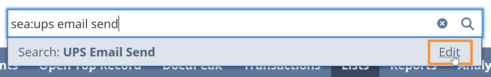
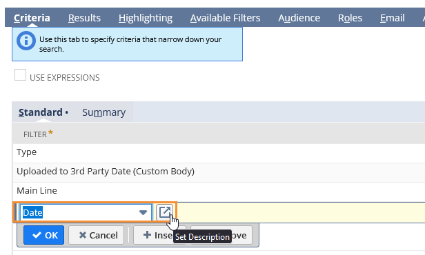
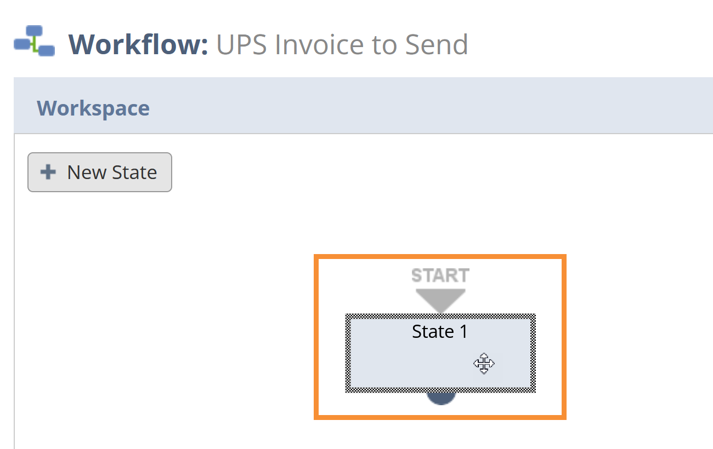
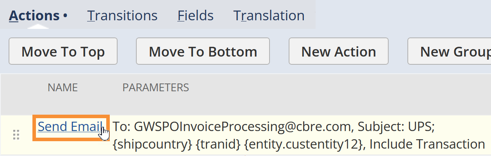
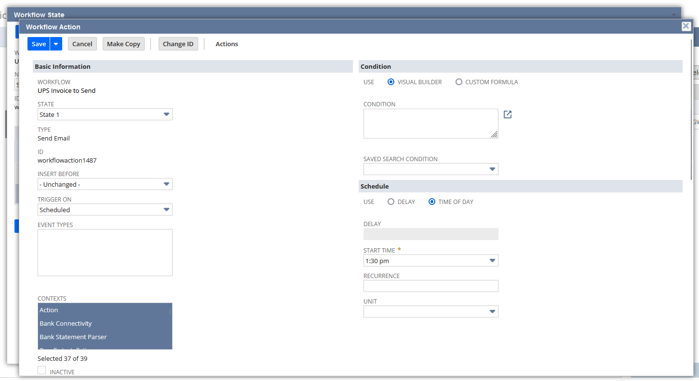

SOP Initiating bulk email invoices for UPS¶
Meta
With Waste Harmonics, my role was to write Standard Operating Procedures (SOPs) for each department because there was a common issue: employees weren't performing their duties consitently and new employees weren't being trained effectively. At the start, there weren't really any official, existing SOPs--just random rough documents of notes and vague processes. Training was handled by employees shadowing other employees until they were up to speed.
As many of the employees had enough on their plate, I decided the best approach to creating the SOPs was to write them myself using a mixture of SME interviews, gaining general product and process knowledge that applied to every department, and gathering any notes or documents that current existed. I designed a template, configure the authoring tool (MadCap Flare), and built the internal knowledge base (SharePoint) where the SOPs could be accessed (as PDFs).
As of now, I've written well over a hundred SOPs, which have been well received and are being used as the source of truth to create learning modules and other training materials.
This sample here is demonstrates how my typical SOPs flow. I wrote it for the Business Intelligence team. It was a process that only the manager knew how to do and with this SOP, he can delegate the task to any one else on the team.
The final result was a PDF with a document layout and design of my own creation.
Standard Operating Procedure
| Department | Version | Publish date |
|---|---|---|
| Business Intelligence | 1.0 | 6/20/2024 |
Purpose¶
This document details the process of initiating a bulk send of invoice PDFs to UPS.
After Accounts Receivable have changed the Sales Orders' statuses to "Ready to Invoice", the AR Manager will create a case requesting the bulk invoices be sent, including with the applicable date range.
- NetSuite Waste Harmonics Administrator Jr role.
N/A
Procedure¶
1. Update the saved search¶
-
In the NetSuite Global Search Bar, enter "sea: ups email send" and select Edit on the suggestion.

-
Under Criteria, update the Date filter to the requested date range.

-
Optionally, update any other fields.
- Select Save.
2. Update the workflow¶
- Go to Customization > Workflow > Workflows.
- Find the UPS Invoice Send workflow and select Edit.
-
In the Workflow sidebar, select Edit ().
The Workflow window opens.

-
Under Schedule:
- For SAVED SEARCH FILTER, choose UPS Email Send.
- For EXECUTION DATE, choose the current date.
- For EXECUTION TIME, choose a time in the afternoon for best results.
-
If any other fields were requested, update them as needed.
- Select Save.
3. Update the workflow state¶
-
Under Workspace, select the State 1 box.

-
In the State sidebar, select Edit ().
The Workflow State window opens.

-
Under Actions, select Send Email.

The Workflow Action window opens.

-
Under Schedule, for START TIME, match the time you selected for EXECUTION TIME on the workflow.
-
Under Sender:
- Select the SPECIFIC SENDER checkbox.
- For SENDER, link the Employee Record from whom the emails will send.
-
Under Receipient, in EMAIL, enter the receiving customer's email address.
-
Under Content:
- Select the CUSTOM checkbox.
-
In SUBJECT, enter the subject template.
Note
Some customers have specific formats the SUBJECT must adhere to.
-
In BODY, enter any applicable information.
-
Under Attachment:
- Select the INCLUDE TRANSACTION checkbox.
- For TYPE, choose PDF.
-
Select Save on the workflow action.
- Select Save on the workflow state.
- Wait for the workflow to run.
4. Verify the run¶
- Go to the customer's page.
- Go to Sales > Transactions and open an invoice.
- On the invoice, go to Communication > Messages. If successful, you'll see the generated email.